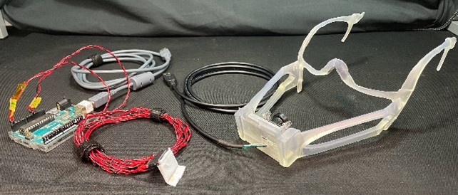
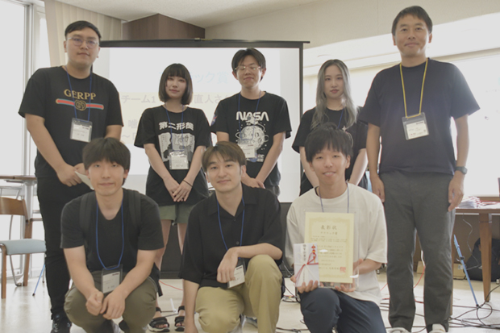
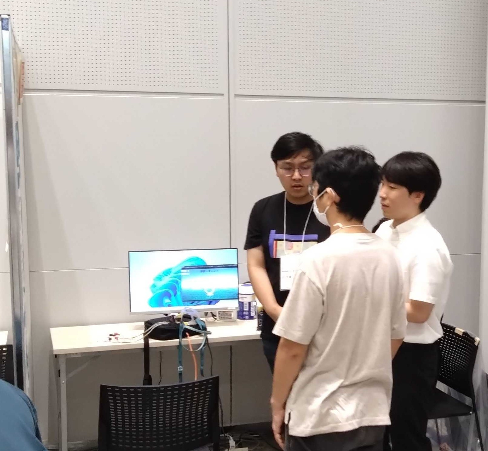

The decline in oral function due to aging and the developmental insufficiency of children's oral functions, which have become issues in recent years, can be prevented through training. This project aims at developing content designed to easily train masticatory movements, occlusal force balance, and facial muscles.A mask-type interface equipped with cameras and accelerometers will be created to measure the shape of the lips and masticatory movements. As for the content, users will experience a game in which they control a paper airplane by changing the shape of their lips and facial expressions, and performing masticatory movements. The goal is to navigate through rings on a course to reach the finish line.
Role
Co-leader, Hardware, Software, Idea/Object Design

Background
A mask-type interface that simultaneously measures oral movement information and allows for oral training. A serious game was created using the measured oral movement information as input. Gamifying multiple oral training exercises and facial muscle movements reduces the burden on participants and increases their motivation.
口腔運動情報を同時に計測し，口腔トレーニングできるマスク型インタフェース．計測した口腔運動情報を入力としたシリアスゲームを作成した．複数の口腔トレーニングや表情筋の運動をゲーム化することより実施者の負担が減り，モチベーションが向上する．
Background
Showcase
IVRC2023 (Interverse Virtual Reality Challenge), U☆PoC (UEC Proof of Concept)

